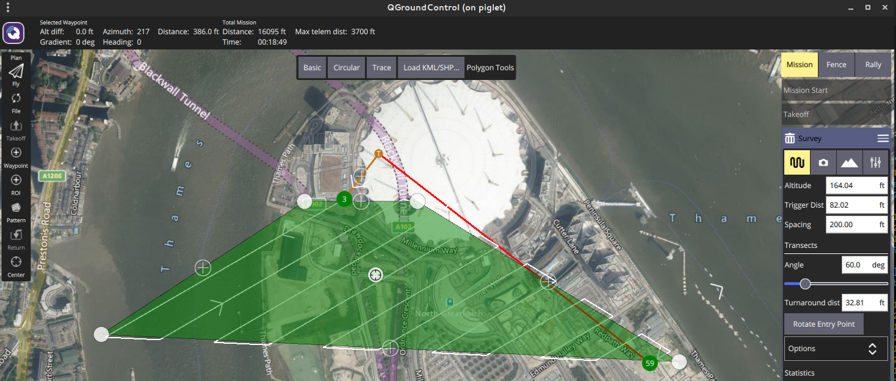
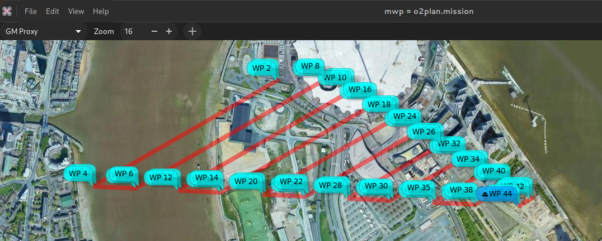
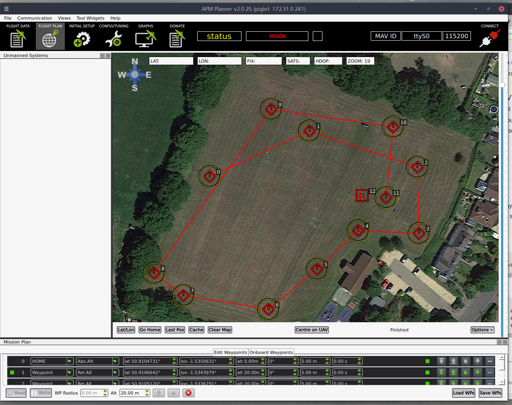
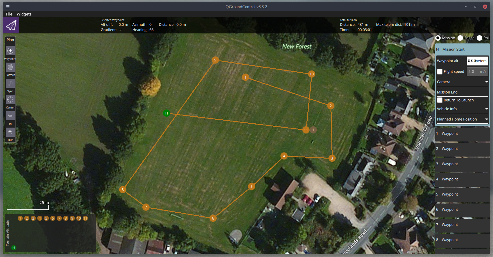
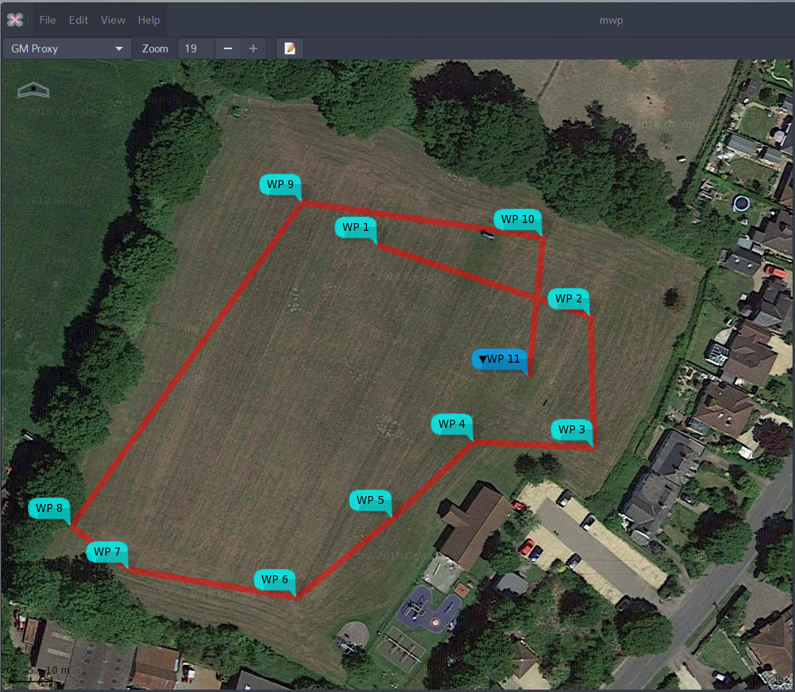
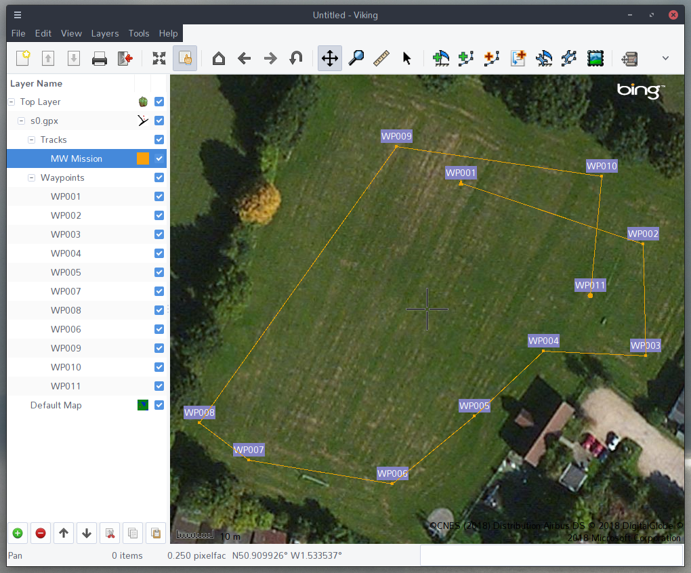
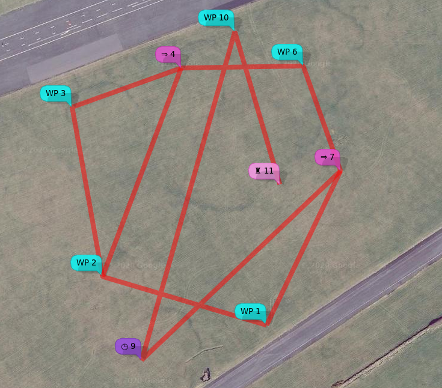

impload, aka inav Mission Plan Loader, is a cross-platform, command line tool to upload missions in a number of file formats to inav. It can also download missions and convert between file formats.
Mission File formats#
impload supports the following file formats:
-
Multiwii XML: (MWXML) The mission file format used by inav mission planners such as mwp, ezgui, mission planner for inav and the inav configurator.
-
APMPlanner2 text files: Mission files generated by APMPlanner (and older qgroundcontrol); "QGC WPL 110" files.
-
qgroundcontrol JSON Plan files (recent versions of qgroundcontrol), simple mission and complex (survey).
-
GPX: A common format often used for GPS information. impload works with GPX files containing tracks, routes or waypoints.
-
KML (and KMZ): Another common format; the export format for a number of well known tools like Google Earth. Mission should be defined as 'paths'.
-
mwp JSON: mission files.
-
Simple CSV: See below for detail
Use Cases#
-
Plan missions in apmplanner, (QGC WPL 110) upload (& save) to iNav
-
Plan missions in any GPX creating GIS tool
-
Plan missions in Google Earth, save as KML, upload to FC
-
Convert "alien" formats to MW-XML.
Youtube tutorial#
Installation#
From source: go get github.com/stronnag/impload, binaries endup in go/bin, source in go/src/github.com/stronnag/impload. Requires go and git.
Binaries in the Release area (linux ia32/x86_64/arm7, Win32, MacOS, FreeBSD) if you don’t want it build it locally. The release area provides standalone binaries for ARM Linux (arm7), Linux on ia32 and x86_64, MacOS, FreeBSD and Windows .
Usage#
Run the executable for your platform in a terminal (Windows cmd or powershell). The majority of the examples are from Linux where the serial device should be auto-detected; the examples are also relevant to MacOS and Windows, however you will need to specifically define the serial device, e.g. -d COM7 on Windows, -d /dev/tty.usbmodem14211 on MacO (where 14221 is possibly a random number).
$ impload -help
Usage of impload [options] command [files ...]
Options:
-a int
Default altitude (m) (default 20)
-b int
Baud rate (default 115200)
-d string
Serial Device
-fmt string
Output format (xml, json, cli, xml-ugly) (default "xml")
-force-land
Adds RTH / Land for 'external' formats
-force-rth
Adds RTH for 'external' formats
-s float
Default speed (m/s)
-v Shows version
command:
Action required (upload|download|store|restore|convert|test|clear|erase|multi[=n])
impload v3.320.671, commit: c4c057e / 2021-11-16
Commands#
upload#
The upload command uploads the specified file as a waypoint mission to the flight controller.
store#
The store command uploads the specified file as a waypoint mission to the flight controller and then instructs inav to save the mission to EEPROM.
download#
The download command downloads the waypoint mission in flight controller volatile memory to the specified file. The mission is always stored as an MW XML mission file.
restore#
The restore command instructs the flight controller to restore a mission previously saved to EEPROM into volatile memory, and then downloads the mission to a file (as for the download command).
convert#
The convert command converts the first file into an MW XML mission file with the second file name.
test#
The test command establishes communications with the flight controller and reports the FC name and build, as well as the contents of volatile mission memory.
multi[=n]#
Gets (multi) or sets (multi=n) the current active multi-mission Id.
Options#
Options start with a hyphen and must precede the command being run. On Linux, impload will attempt to access /dev/ttyACM0 and /dev/ttyUSB0, so the device does not need to be specified if using these device nodes. On Windows and MacOS, it is
necessary to specify the device name / node.
-
-d device: define the device name -
-b baudrate: define the baud rate (if not 115200 baud) -
-a default-altitude: sets the default altitude unless it’s otherwise defined. MW XML mission files, apm mission files and CSV may define altitude values, so the default value given on the command line is only used for missing (zero) values. The value is in metres. -
-s default-speed: defines the default speed. This is used where a leg speed is not set in the input mission file. MW XML mission file, mwp-json and QGC (apmplanner2, qgroundcontrol) are the only formats that specify a speed value. If not set, the mission is flown at the speed set in FC configuration. -
-force-rth: For GPX only, adds RTH after the final waypoint. -
-force-land: For GPX only, adds RTH with land after the final waypoint.
Device Names#
impload supports a subset of the mwp device naming scheme:
-
serial_device[@baudrate] -
tcp://host:port -
udp://remotehost:remote_port -
udp://local_host:local_port/remote_host:remote_portorudp://remotehost:remote_port/?bind=port
The baud rate given as an extended device name is preferred to -b
For ESP8266 transparent serial over UDP (the recommended mode for ESP8266), one of the latter forms is required, as the same port must be used locally and remotely.
Device Name examples#
/dev/ttyUSB0@57600
/dev/ttyACM0
COM17@115200
tcp://esp8266:23
udp://:14014/esp-air:14014
# both sides use port 14014, remote (FC) is esp-air, blank local name is understood as INADDR_ANY. Last above is same as:
udp://esp-air:14014/?bind=14014
Files#
The impload commands require zero, one or two file names. If file names are missing or are a single hyphen, then stdin (standard input) is used for readings and stdout (standard output) is used for writing. This allows pipelines to be used.
Usage Examples#
Convert a GPX track file to MW XML mission file#
$ impload convert test.gpx gpx_trk.mission
Store a apmplanner2 mission file to EEPROM#
impload supports the following QGC WP types:
-
Waypoint (16)
-
Poshold_time (19)
-
RTH (20)
-
Land (21)
-
Jump (177)
-
SET_ROI (201)
-
DO_SET_ROI_LOCATION (195)
-
DO_SET_ROI_NONE (197)
-
DO_CONDITION_YAW (115)
with the following recommendations / restrictions:
-
Provide explicit positions rather that 'use previous' values
-
Jump to geo-referenced WPs
Tabular list of WP types showing conversions and more detail on the ROI / YAW settings and restrictions.
$ impload store samples/qpc_0.txt
2018/05/24 18:09:10 Using device /dev/ttyUSB0 115200
INAV v2.0.0 SPRACINGF3 (e7ca7944) API 2.2 "vtail"
Waypoints: 0 of 60, valid 0
upload 12, save true
Saved Mission
Waypoints: 12 of 60, valid 1
Upload a KML file to inav#
$ impload upload samples/google-earth-mission.kml
2018/05/29 20:07:26 Using device /dev/ttyUSB0 115200
INAV v2.0.0 SPRACINGF3 (6ccd0cc9) API 2.2 "vtail"
Waypoints: 0 of 60, valid 0
upload 9, save false
Waypoints: 9 of 60, valid 1
Sample Images#
Note that 'home' is notional in all cases, as we’re not at the field. It is not required by inav mission planners (mwp, ezgui, mission planner for inav et al).
QGC Survey#
Original survey plan:

In mwp after impload convert:

Sample QGC in apmplanner2#
Note that WP 0 is 'home' and doesn’t count; WP 12 indicates RTH.

Sample QGC in apmplanner2#

Sample in mwp#
The sample apm text file was uploaded to the FC, and downloaded into mwp.

Sample as GPX#
The sample apm file as converted to an MW XML mission, then to a GPX (using mwptools' mission2gpx.rb), then loaded into the FC. Somewhat contrived use case.

$ impload convert samples/qpc_1.txt /tmp/qpc_1.mission
$ mission2gpx.rb /tmp/qpc_1.mission /tmp/qpc_1_trk.gpx
$ impload store tmp/qpc_1_trk.gpx
CSV Format#
impload can upload and convert missions defined by a simple CSV file. The header line must be present and must be one of:
no,wp,lat,lon,alt,p1,p2
or
wp,lat,lon,alt,p1,p2
i.e. the waypoint number is optional.
As of impload v3.021.370 (2021-01-21), impload supports all the inav 2.6 waypoint types, as either text or numeric values for CSV import.
Sample files:
no,wp,lat,lon,alt,p1,p2
1,WAYPOINT,54.353319318038153,-4.5179273723848077,35,0.0,0
2,WAYPOINT,54.353572350395972,-4.5193913118652516,35,0.0,0
3,WAYPOINT,54.354454163955907,-4.5196617811150759,50,0.0,0
4,WAYPOINT,54.354657830207479,-4.5186895986330455,50,0.0,0
5,JUMP,0,0,0,2,2
6,WAYPOINT,54.354668848061756,-4.5176009696657218,35,0.0,0
7,WAYPOINT,54.354122567317191,-4.5172673708680122,35,0.0,0
8,JUMP,0,0,0,1,1
9,POSHOLD_TIME,54.353138333126651,-4.5190405596657968,35,45,0.0
10,WAYPOINT,54.354847022143616,-4.518210497615712,35,0.0,0
11,LAND,54.354052100964488,-4.5178091504726012,60,0,0
and without numbers, and 'lazy' wp name and some numeric values.
wp,lat,lon,alt,p1,p2
WP,54.353319318038153,-4.5179273723848077,35,0.0,0
WP,54.353572350395972,-4.5193913118652516,35,0.0,0
WP,54.354454163955907,-4.5196617811150759,50,0.0,0
WP,54.354657830207479,-4.5186895986330455,50,0.0,0
JUMP,0,0,0,2,2
WP,54.354668848061756,-4.5176009696657218,35,0.0,0
WP,54.354122567317191,-4.5172673708680122,35,0.0,0
6,0,0,0,1,1
POSHOLD_TIME,54.353138333126651,-4.5190405596657968,35,45,0.0
WP,54.354847022143616,-4.518210497615712,35,0.0,0
8,54.354052100964488,-4.5178091504726012,60,0,0
Both result in the following XML mission file:
<?xml version="1.0" encoding="utf-8"?>
<mission>
<!--Created by "impload" v2.087.278 on 2020-03-27T07:47:46Z
<https://github.com/stronnag/impload>
-->
<version value="impload v2.087.278"/>
<missionitem no="1" action="WAYPOINT" lat="54.35331931803815" lon="-4.517927372384808" alt="35" parameter1="0" parameter2="0" parameter3="0"/>
<missionitem no="2" action="WAYPOINT" lat="54.35357235039597" lon="-4.519391311865252" alt="35" parameter1="0" parameter2="0" parameter3="0"/>
<missionitem no="3" action="WAYPOINT" lat="54.35445416395591" lon="-4.519661781115076" alt="50" parameter1="0" parameter2="0" parameter3="0"/>
<missionitem no="4" action="WAYPOINT" lat="54.35465783020748" lon="-4.5186895986330455" alt="50" parameter1="0" parameter2="0" parameter3="0"/>
<missionitem no="5" action="JUMP" lat="0" lon="0" alt="0" parameter1="2" parameter2="2" parameter3="0"/>
<missionitem no="6" action="WAYPOINT" lat="54.354668848061756" lon="-4.517600969665722" alt="35" parameter1="0" parameter2="0" parameter3="0"/>
<missionitem no="7" action="WAYPOINT" lat="54.35412256731719" lon="-4.517267370868012" alt="35" parameter1="0" parameter2="0" parameter3="0"/>
<missionitem no="8" action="JUMP" lat="0" lon="0" alt="0" parameter1="1" parameter2="1" parameter3="0"/>
<missionitem no="9" action="POSHOLD_TIME" lat="54.35313833312665" lon="-4.519040559665797" alt="35" parameter1="45" parameter2="0" parameter3="0"/>
<missionitem no="10" action="WAYPOINT" lat="54.354847022143616" lon="-4.518210497615712" alt="35" parameter1="0" parameter2="0" parameter3="0"/>
<missionitem no="11" action="LAND" lat="54.35405210096449" lon="-4.517809150472601" alt="60" parameter1="0" parameter2="0" parameter3="0"/>
</mission>
Note that p1 (aka parameter1 in MW XML) is the leg speed (m/s) for WAYPOINTs and the landing flag for RTH (1 = land). alt (altitude) is integer metres. These parameters (and others) are fully described in the inav wiki. There is also an animated preview of this mission as a short youtube
video.
CSV upload visualised in mwp#

Note also#
- impload enforces inav mission sanity rules.
Postscript#
The author knows how to spell "implode".